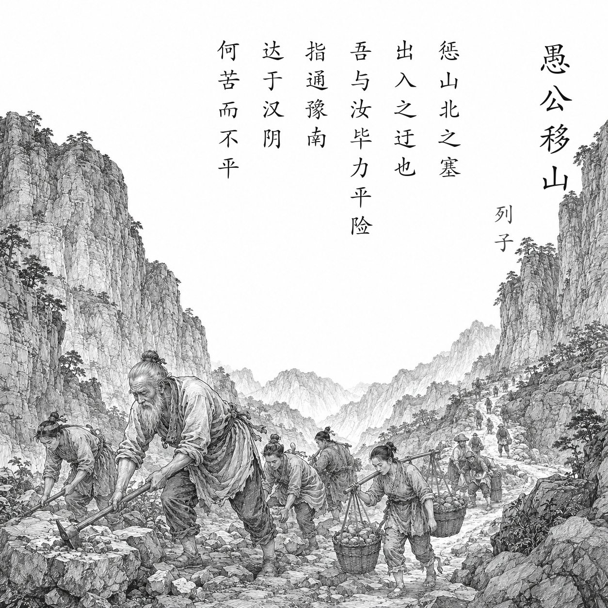

战国至秦汉间 · 《列子》作者群
愚公移山
太行、王屋二山，方七百里，高万仞，本在冀州之南，河阳之北。
北山愚公者，年且九十，面山而居。惩山北之塞，出入之迂也，聚室而谋曰：“吾与汝毕力平险，指通豫南，达于汉阴，可乎？”杂然相许。其妻献疑曰：“以君之力，曾不能损魁父之丘，如太行、王屋何？且焉置土石？”杂曰：“投诸渤海之尾，隐土之北。”遂率子孙荷担者三夫，叩石垦壤，箕畚运于渤海之尾。邻人京城氏之孀妻有遗男，始龀，跳往助之。寒暑易节，始一反焉。
河曲智叟笑而止之曰：“甚矣，汝之不惠！以残年余力，曾不能毁山之一毛，其如土石何？”北山愚公长息曰：“汝心之固，固不可彻，曾不若孀妻弱子。虽我之死，有子存焉；子又生孙，孙又生子；子又有子，子又有孙；子子孙孙无穷匮也，而山不加增，何苦而不平？”河曲智叟亡以应。
操蛇之神闻之，惧其不已也，告之于帝。帝感其诚，命夸娥氏二子负二山，一厝朔东，一厝雍南。自此，冀之南，汉之阴，无陇断焉。
白话翻译
太行、王屋两座山，方圆七百里，高达万仞，本来位于冀州南面、黄河北岸。
北山愚公将近九十岁，因家门正对大山、出入绕远，便召集全家商量移山。妻子提出力量和弃土地点的问题，大家决定把土石运到渤海边，于是子孙和邻家孩子都来相助，一年才往返一次。
河曲智叟嘲笑他年老力弱。愚公回答：人的力量会由子孙不断延续，而山不会再增高，为什么不能挖平？智叟无话可答。
山神害怕他们永不停工，便报告天帝。天帝被愚公的诚意感动，命大力神把两座山背走。从此冀州南部到汉水南岸再没有高山阻隔。
为什么写这篇古诗文
故事出自《列子·汤问》。它用愚公和智叟的对话，把眼前有限的体力与世代延续的时间放在一起比较，赞扬认定目标后长期坚持、共同努力的精神。结尾由神灵移山，说明它是寓言，不应理解为某位作者路过两山后的实录。
关于作者
《列子》传统上题为战国列御寇所作，但今本内容经历长期汇集和整理，成书问题复杂。因此与其把全文简单归给一位可确定年龄的作者，更稳妥的说法是“《列子》作者群”。